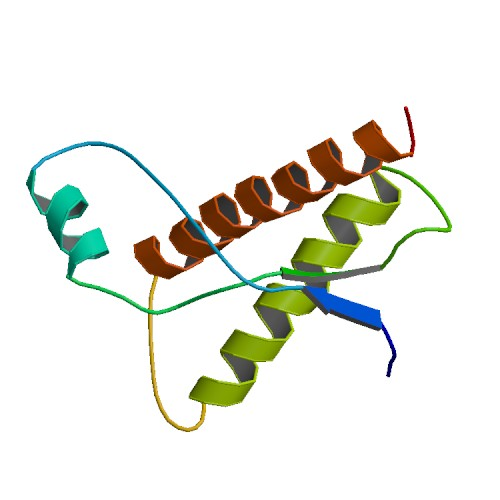
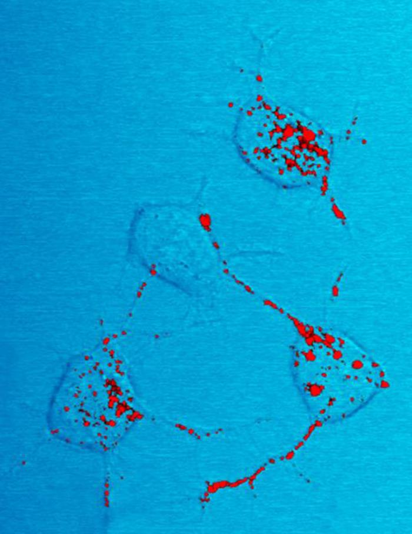
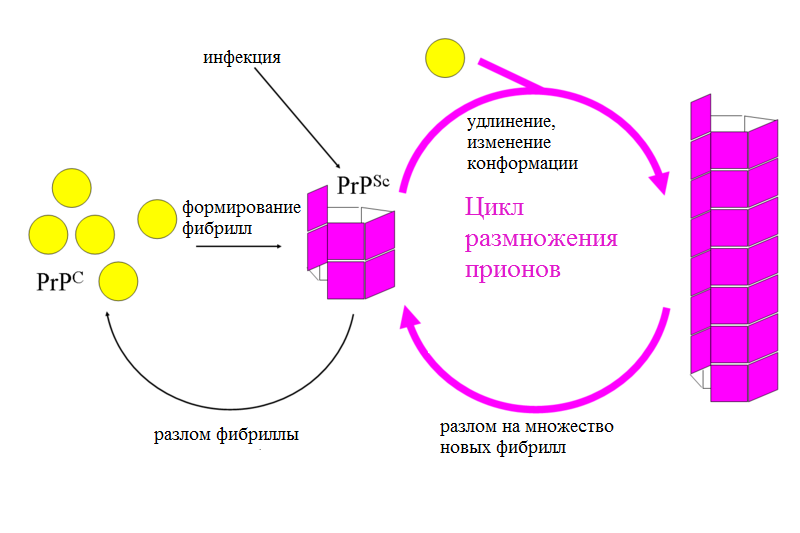
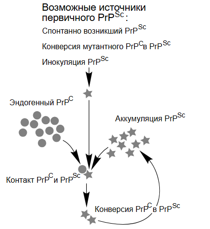
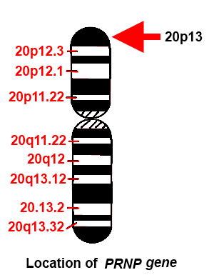

Не следует путать с преонами — гипотетическими элементарными частицами.
Прио́ны (англ. prion от protein «белок» + infection «инфекция»; слово было предложено в 1982 году Стенли Прузинером) — особый класс инфекционных патогенов, не содержащих нуклеиновых кислот. Прионы представляют собой белки с аномальной третичной структурой. Это положение лежит в основе прионной гипотезы, однако насчёт состава прионов существуют и другие точки зрения.
Прионы способны увеличивать свою численность, используя функции живых клеток (в этом отношении прионы схожи с вирусами). Прион способен катализировать конформационное превращение гомологичного ему нормального клеточного белка в себе подобный (прион). Как правило, при переходе белка в прионное состояние его α-спирали превращаются в β-слои. Появившиеся в результате такого перехода прионы могут в свою очередь перестраивать новые молекулы белка; таким образом, запускается цепная реакция, в ходе которой образуется огромное количество неправильно свёрнутых молекул. Прионы — единственные известные инфекционные агенты, размножение которых происходит без участия нуклеиновых кислот.
Все известные прионы вызывают формирование амилоидов — белковых агрегатов, включающих плотно упакованные β-слои. Амилоиды представляют собой фибриллы, растущие на концах, а разлом фибриллы приводит к появлению четырёх растущих концов. Инкубационный период прионного заболевания определяется скоростью экспоненциального роста количества прионов, а она, в свою очередь, зависит от скорости линейного роста и фрагментации агрегатов (фибрилл). Для размножения приона необходимо исходное наличие нормально уложенного клеточного прионного белка; организмы, у которых отсутствует нормальная форма прионного белка, не страдают прионными заболеваниями.
Прионная форма белка чрезвычайно стабильна и накапливается в поражённой ткани, вызывая её повреждение и, в конечном счёте, отмирание. Стабильность прионной формы означает, что прионы устойчивы к денатурации под действием химических и физических агентов, поэтому уничтожить эти частицы или сдержать их рост тяжело. Прионы существуют в нескольких формах — штаммах, каждый со слегка отличной структурой.
Прионы вызывают заболевания — трансмиссивные губчатые энцефалопатии (ТГЭ) у различных млекопитающих, в том числе губчатую энцефалопатию крупного рогатого скота («коровье бешенство»). У человека прионы вызывают болезнь Крейтцфельдта — Якоба, вариант болезни Крейтцфельдта — Якоба (vCJD), синдром Герстмана — Штраусслера — Шейнкера, фатальную семейную бессонницу и куру. Все известные прионные заболевания поражают головной мозг и другие нервные ткани, в настоящее время неизлечимы и в конечном итоге смертельны.
Все известные прионные заболевания млекопитающих вызываются белком PrP. Его форма с нормальной третичной структурой называется PrPC (от англ. common «обычный» или cellular «клеточный»), а инфекционная, аномальная форма называется PrPd (от англ. disease — болезнь), а также встречаются варианты PrPSc (от англ. scrapie [скрепи] «почесуха овец», одно из первых заболеваний с установленной прионной природой) или PrPTSE (от англ. Transmissible Spongiform Encephalopathies). В зарубежной литературе встречаются сокращения с указанием на прионы, полученные от конкретного вида, то есть из тканей определённого животного или человека (PrPSc, PrPBSE, PrPCJD, PrPCWD, PrPСSE — от овец, коров, человека, оленей, кошек).
Белки, образующие прионы, обнаружены и у некоторых грибов. Большинство прионов грибов не имеют заметного отрицательного влияния на выживаемость, но до сих пор идёт дискуссия о роли грибных прионов в физиологии организма-хозяина и роли в эволюции. Выяснение механизмов размножения прионов грибов оказалось важным для понимания аналогичных процессов у млекопитающих.
В 2016 году появилось сообщение о наличии у растения Arabidopsis thaliana (резуховидка Таля) белков с прионными свойствами.
История
В XVIII и XIX веках экспорт овец из Испании совпал с болезнью, называемой скрепи. Это заболевание приводило к тому, что поражённые животные «ложились, кусали ступни и ноги, терлись спиной о столбы, не могли процветать, переставали кормиться и, в конце концов, хромали». Также был отмечен длительный инкубационный период. Хотя причина возникновения скрепи тогда была неизвестна, это, вероятно, первый зарегистрированный случай губчатой энцефалопатии. Все эти симптомы являются классическими признаками повреждения мозга, и эта странная болезнь вводила учёных в заблуждение. Гораздо позже, в 1961 году, Р. Л. Чендлер (англ. Chandler) установил, что скрепи могут болеть и мыши, что, несомненно, было прогрессом в изучении этого заболевания.
.jpg)
В XX веке были описаны и прионные заболевания человека. В 1920-х годах Ганс Герхард Крейцфельдт и Альфонс Мария Якоб исследовали новое неизлечимое заболевание нервной системы человека, главным признаком которого было образование полостей в ткани мозга. Впоследствии эта болезнь была названа их именем.
В 1957 году Карлтон Гайдузек и Винсент Зигас описали неврологический синдром, распространённый у народа форе, живущего в высокогорьях Папуа — Новой Гвинеи. Эта болезнь характеризовалась тремором, атаксией, на ранних стадиях — атетоидными движениями. К этим симптомам впоследствии прибавлялась слабость, деменция, болезнь неизбежно заканчивалась летальным исходом. На языке форе эта болезнь называется «куру», что в переводе означает «дрожь» или «порча»; под этим названием эта болезнь известна и сегодня. Оказалось, что причиной распространения куру был нередкий среди форе ритуальный каннибализм. В ходе религиозных ритуалов они поедали органы убитых родичей. Мозг при этом ели дети, поскольку считалось, что от него у детей «прибавлялось ума». Инкубационный период заболевания может составлять до 50 лет, однако у девушек, особенно подверженных куру, он может составлять всего лишь 4 года или менее. Позже Карлтон начал исследования, которые в конечном итоге показали, что куру может передаваться шимпанзе, возможно, новым инфекционным агентом. За эту работу он в 1976 году получил Нобелевскую премию по физиологии или медицине.
В 1960-х годах два исследователя из Лондона, радиационный биолог Тиква Альпер и биофизик Джон Стэнли Гриффит, выдвинули гипотезу о том, что трансмиссивные губчатые энцефалопатии вызываются инфекционным агентом, состоящим исключительно из белков. Более ранние исследования Э. Дж. Филда по скрейпи и куру показали, что патологически инертные полисахариды становятся заразными только после попадания в организм нового хозяина. Альпер и Гриффит хотели объяснить открытие, согласно которому загадочный инфекционный агент, вызывающий скрейпи и болезнь Крейтцфельдта — Якоба, устойчив к ионизирующему излучению. Доза радиации, необходимая для уничтожения половины частиц инфекционного агента, зависит от их размера: чем меньше такая частица, тем меньше вероятность попадания в неё заряженной частицы. Так и было установлено, что прион слишком мал для вируса. Гриффит предложил три способа, с помощью которых белок может стать патогенным:
• В своей первой гипотезе он предположил, что если белок является продуктом обычно подавляемого гена, то его введение может вызвать экспрессию гена, то есть пробудить спящий ген. В результате процесс будет неотличим от репликации, поскольку экспрессия гена приведет к выработке белка, который затем пробудит ген в других клетках.
• Вторая гипотеза, выдвинутая им, легла в основу современной теории прионов. Он предположил, что аномальная форма клеточного белка может превращать нормальные белки того же типа в аномальную форму, что приводит к репликации.
• Согласно третьей гипотезе Гриффита, агент мог быть антителом, если бы антитело было его собственным антигеном, поскольку в таком случае антитело приводило бы к выработке все большего количества антител против самого себя. Однако Гриффит признавал, что эта третья гипотеза вряд ли верна из-за отсутствия заметного иммунного ответа.
Фрэнсис Крик во втором издании своей книги «Центральная догма молекулярной биологии» (1970) признал потенциальную значимость гипотезы Гриффита о передаче вируса скрейпи только через белки. Утверждая, что передача информации о последовательности от белка к белку или от белка к РНК и ДНК «исключена», он отметил, что гипотеза Гриффита потенциально противоречит этому утверждению (хотя сам Гриффит так не считал). Позднее центральная догма была частично пересмотрена с учетом обратной транскрипции (которую в 1970 году открыли Говард Темин и Дэвид Балтимор).
В 1982 году Стэнли Б. Прузинер из Калифорнийского университета в Сан-Франциско объявил, что его команда выделила гипотетический инфекционный белок, который, по всей видимости, отсутствует у здоровых носителей. Однако выделить этот белок удалось только через два года после заявления Прузинера. Белок назвали прионом, что означает «белковая инфекционная частица» и образовано от слов «белок» и «инфекция». Когда был открыт прион, многие поддержали первую гипотезу Гриффита о том, что этот белок является продуктом нормально неактивного гена. Однако впоследствии выяснилось, что этот же белок присутствует в организме здоровых людей, но в другой форме.
После того как у неинфицированных людей был обнаружен тот же белок, но в другой форме, специфический белок, из которого состоял прион, получил название «прионный белок» (PrP), а вторая гипотеза Гриффита о том, что аномальная форма белка хозяина может превращать другие белки того же типа в аномальную форму, стала доминирующей теорией. Прузинер был удостоен Нобелевской премии по физиологии и медицине в 1997 году за исследования прионов.
Структура
Изоформы

Белок, из которого состоят прионы (PrP), можно найти во всех частях тела у здоровых людей и животных. Однако в поражённых тканях присутствует PrP, имеющий аномальную структуру и устойчивый к протеазам (ферментам, гидролизующим белки). Как сказано выше, нормальная форма называется PrPC, а инфекционная — PrPSc. При определённых условиях можно достичь сворачивания более или менее структурированных изоформ PrP in vitro, которые способны к заражению здоровых организмов, хотя и с меньшей степенью эффективности, чем выделенный из больных организмов
PrPC
PrPC — нормальный мембранный белок млекопитающих, который у человека кодируется геном PRNP. мРНК PRNP человека кодирует полипептид длиной 253 аминокислотных остатка (а. о.), который в процессе созревания укорачивается клеточными ферментами. Зрелая форма PrP состоит из 208 аминокислотных остатков и имеет молекулярную массу 35—36 кДа. Помимо ограниченного протеолиза, PrP подвергается и другим посттрансляционным модификациям: N-гликозилированию по положениям Asn-181 и Asn-197, присоединению гликозилфосфатидилинозитола к Ser-230 и образованию дисульфидной связи между Cys-179 и Cys-214. Аминокислотные остатки, вовлечённые во все перечисленные посттрансляционные модификации, высоко консервативны у млекопитающих.
В пространственной структуре PrP выделяют неструктурированный N-концевой участок (а. о. 23—125 у человека) и глобулярный домен (а. о. 126—231), состоящий из трёх α-спиралей и двухцепочечного антипараллельного β-листа.
Известно несколько топологических форм PrP по отношению к мембране: две трансмембранные и одна закреплённая на мембране гликолипидным якорем.
Образование PrPC происходит в ЭПР, дальнейшее созревание — в комплексе Гольджи, откуда он при помощи мембранных везикул доставляется к плазматической мембране. После этого он либо закрепляется на мембране после разрушения эндосомы, либо же подвергается эндоцитозу и разрушается в лизосомах.
В отличие от нормальной, растворимой формы белка, прионы осаждаются высокоскоростным центрифугированием, что является стандартным тестом на наличие прионов. PrPC обладает высоким сродством к катионам двухвалентной меди. Значение этого факта неясно, но, возможно, это имеет какое-то отношение к его структуре или функциям. Есть данные, что PrP играет важную роль в прикреплении клеток, передаче внутриклеточных сигналов, а потому может быть вовлечён в коммуникацию клеток мозга. Тем не менее, функции PrP исследованы недостаточно.

PrPSc
Инфекционная изоформа PrP — PrPSc — способна превращать нормальный белок PrPC в инфекционную изоформу, изменяя его конформацию (то есть третичную структуру); это, в свою очередь, изменяет взаимодействия PrP с другими белками. Хотя точная пространственная структура PrPSc неизвестна, установлено, что в ней вместо α-спиралей преобладают β-слои. Такие ненормальные изоформы объединяются в высокоструктурированные амилоидные волокна, которые, скапливаясь, формируют бляшки. Неясно, являются ли эти образования причиной повреждения клеток или всего лишь побочным продуктом патологического процесса. Конец каждого волокна служит своего рода затравкой, к которой могут прикрепляться свободные белковые молекулы, в результате чего фибрилла растёт. В большинстве случаев присоединяться могут только молекулы PrP, идентичные по первичной структуре PrPSc (поэтому обычно передача прионов видоспецифична). Однако, возможны и случаи межвидовой передачи прионов
Механизм размножения прионов


Первой гипотезой, объясняющей размножение прионов без участия других молекул, в частности, нуклеиновых кислот, была гетеродимерная модель. Согласно этой гипотезе, одна молекула PrPSc присоединяется к одной молекуле PrPC и катализирует её переход в прионную форму. Две молекулы PrPSc после этого расходятся и продолжают превращать другие PrPC в PrPSc. Однако модель размножения (репликации) прионов должна объяснять не только механизм размножения прионов, но и то, почему спонтанное появление прионов столь редко. Манфред Эйген (лат. Manfred Eigen) показал, что гетеродимерная модель требует, чтобы PrPSc был фантастически эффективным катализатором: он должен повышать частоту обращения нормального белка в прионную форму в 1015 раз. Такой проблемы не возникает, если допустить, что PrPSc существует только в агрегированной (например, амилоидной) форме, где кооперативность выступает как барьер для спонтанного перехода в прионную форму. Вдобавок к этому, несмотря на приложенные усилия, выделить мономерный PrPSc так и не удалось.
Альтернативная фибриллярная модель предполагает, что PrPSc существует только в виде фибрилл, при этом концы фибрилл связывают PrPС, где он превращается в PrPSc. Если бы это было только так, то численность прионов возрастала бы линейно. Однако по мере развития прионного заболевания наблюдается экспоненциальный рост количества PrPSc и общей концентрации инфекционных частиц. Это можно объяснить, если принять во внимание разлом фибрилл. В организме разламывание фибрилл осуществляется белками-шаперонами, которые обычно помогают очистить клетку от агрегированных белков.
тельной мере опреде
Скорость роста числа инфекционных частиц прионов в значиляется величиной квадратного корня из концентрации PrPSc. Продолжительность инкубационного периода определяется скоростью роста, и это подтверждается исследованиями in vivo на трансгенных мышах. Такая же коренная зависимость наблюдается в экспериментах с различными амилоидными белками in vitro.
Механизм репликации прионов имеет значение для разработки лекарств. Поскольку инкубационный период прионных заболеваний чрезвычайно долог, эффективному лекарству вовсе необязательно уничтожить все прионы, достаточно лишь снизить скорость экспоненциального роста их количества. Моделирование предсказывает, что самым эффективным препаратом был бы такой, который связывается с концами фибрилл и блокирует их рост.
Функции PrP
Одним из объяснений нейродегенерации, вызываемой прионами, может быть нарушение функционирования PrP. Однако нормальная функция этого белка изучена плохо. Данные in vitro указывают на множество разнообразных ролей, а эксперименты на мышах, «нокаутных» по этому гену, дали относительно немного информации, поскольку у этих животных наблюдались лишь малые отклонения от нормы. Недавние исследования, проведённые на мышах, показали, что расщепление PrP в периферических нервах активирует восстановление их миелинового слоя шванновскими клетками и что отсутствие PrP приводит к демиелинизации нервов.
В 2005 году было выдвинуто предположение, что в норме PrP играет роль в поддержании долговременной памяти. Кроме того, у мышей, лишённых гена Prnp, наблюдается изменённая гиппокампальная долговременная потенциация.
В 2006 году учёные из Института биомедицинских исследований Уайтхед показали, что экспрессия гена Prnp в гемопоэтических стволовых клетках необходима для самоподдержания костного мозга. В исследовании было выявлено, что долгоживущие гемопоэтические стволовые клетки несут PrP на клеточной мембране, а кроветворные ткани со стволовыми клетками, лишёнными PrP, имеют большую чувствительность к клеточному истощению
Гипотезы о составе прионов
Согласно наиболее устоявшейся точке зрения, прионы представляют собой чисто белковые инфекционные агенты. Однако у этой гипотезы («чисто белковой») имеются свои недостатки, в связи с чем появились и альтернативные мнения о сущности прионов. Все перечисленные гипотезы рассматриваются ниже.
«Чисто белковая» гипотеза
До открытия прионов считалось, что все инфекционные агенты используют для размножения нуклеиновые кислоты. «Чисто белковая» гипотеза постулирует, что белковая структура может размножаться без участия нуклеиновых кислот. Первоначально считалось, что эта гипотеза противоречит центральной догме молекулярной биологии, согласно которой нуклеиновые кислоты служат единственным способом передачи наследственной информации, однако в настоящее время считается, что хотя прионы способны к переносу информации без участия нуклеиновых кислот, они неспособны передавать информацию на нуклеиновые кислоты.
Доказательства, говорящие в пользу «чисто белковой» гипотезы:
· прионные заболевания не удалось достоверно связать ни с вирусными, ни с бактериальными, ни с грибковыми возбудителями, хотя у дрожжей Saccharomyces cerevisiae известны нелетальные прионы, например, Sup35p (см. прионы грибов);
· инфективность прионов, насколько известно, не связана с нуклеиновыми кислотами; прионы устойчивы к нуклеазам и ультрафиолетовому излучению, губительно сказывающихся на нуклеиновых кислотах;
· у организма, заражённого прионом от другого вида, не обнаруживается PrPSc с аминокислотной последовательностью приона вида-донора. Следовательно, репликации приона донора не происходит;
· в семьях с мутацией гена PrP имеют место наследственные прионные заболевания. У мышей с мутацией этого гена тоже развивается прионное заболевание, несмотря на жёсткий контроль условий содержания, исключающий заражение извне;
· животные, не имеющие белка PrPC, не подвержены прионным заболеваниям.
· в 2018 году в искусственных условиях в отсутствие НК были получены рекомбинантные изоформы PrPd (от disease — болезнь)
Мультикомпонентная гипотеза
Низкая инфекционность прионов, полученных из чистого белка in vitro привела к появлению так называемой мультикомпонентной гипотезы, которая постулирует, что для образования инфекционного приона требуются другие молекулы-кофакторы.
В 2007 году биохимик Surachai Supattapone и его коллеги из Дартмутского колледжа получили очищенные инфекционные прионы из PrPC, соочищающихся липидов с белком и синтетической полианионной молекулы. Они также показали, что полианионная молекула, потребовавшаяся для образования приона, обладала высоким сродством к PrP и образовывала с ним комплексы. Это дало им основания предположить, что в состав инфекционного приона входит не только белок, но и другие молекулы организма, в том числе липиды и полианионные молекулы.
В 2010 году Ма Цзиянь (Jiyan Ma) с коллегами из Университета штата Огайо получили инфекционный прион из синтезированного бактериальными клетками рекомбинантного PrP, фосфолипида POPG и РНК, что тоже подтверждает мультикомпонентную гипотезу. Напротив, в других экспериментах из одного только рекомбинантного PrP удалось получить только слабоинфективные прионы.
В 2012 году Supattapone и коллеги выделили мембранный липид фосфатидилэтаноламин как эндогенный кофактор, который способен катализировать формирование большого количества рекомбинантных прионов различных штаммов без участия других молекул. Они также сообщили, что этот кофактор необходим для поддержания инфекционной конформации PrPSc, а также определяет штаммовые свойства инфекционных прионов
Вирусная гипотеза
«Чисто белковая» гипотеза встретила критику со стороны тех, кто считает, что простейшим объяснением прионных заболеваний является их вирусная природа. Более десяти лет невролог Йельского университета Лаура Мануелидис (англ. Laura Manuelidis) пытается доказать, что прионные заболевания вызываются неизвестным медленным вирусом. В январе 2007 года она и её коллеги сообщили, что обнаружили вирус в 10 % (или менее) клеток, заражённых скрепи в культуре.
Вирусная гипотеза утверждает, что ТГЭ вызываются способными к репликации информационными молекулами (скорее всего, нуклеиновыми кислотами), связывающимися с PrP. Известны штаммы прионов при ТГЭ, в том числе губчатой энцефалопатии крупного рогатого скота и скрепи, которые характеризуются специфическими биологическими свойствами, что, по мнению сторонников вирусной гипотезы, не объясняется «чисто белковой» гипотезой.
Аргументы, говорящие в пользу вирусной гипотезы:
· вариации между штаммами: прионы различаются по инфективности, инкубационному периоду, симптоматике и скорости развития заболевания, что напоминает различия между вирусами, особенно РНК-содержащими вирусами (вирусы, содержащие РНК в качестве единственного наследственного материала);
· долгий инкубационный период и быстрое развитие симптомов прионных болезней напоминает лентивирусную инфекцию. Например, схожим образом протекает ВИЧ-индуцированный СПИД;
· в некоторых клетках линий, заражённых скрепи или болезнью Крейтцфельдта — Якоба, были найдены вирусоподобные частицы, не состоящие из PrP.
· Недавние исследования распространения губчатой энцефалопатии крупного рогатого скота в бесклеточных системах и в химических реакциях с очищенными компонентами чётко свидетельствуют против вирусной природы этого заболевания. Кроме того, против вирусной гипотезы говорит и вышеупомянутая работа Jiyan Ma
Прионные заболевания
Прионы вызывают нейродегенеративные заболевания, так как образуют внеклеточные скопления в центральной нервной системе и формируют амилоидные бляшки, которые разрушают нормальную структуру ткани. Разрушение характеризуется образованием «дыр» (полостей) в ткани, и ткань принимает губчатую структуру из-за формирования вакуолей в нейронах. Другие наблюдаемые при этом гистологические изменения — астроглиоз (увеличение численности астроцитов из-за разрушения близлежащих нейронов) и отсутствие воспалительных реакций. Хотя инкубационный период прионных заболеваний, как правило, очень долог, после появления симптомов болезнь прогрессирует быстро, приводя к разрушению мозга и смерти. Проявляющимися при этом нейродегенеративными симптомами могут быть конвульсии, деменция, атаксия (расстройство координации движений), поведенческие и личностные изменения.
Все известные прионные заболевания, объединяемые под названием «трансмиссивные губчатые энцефалопатии» (ТГЭ), неизлечимы и фатальны. Для мышей была разработана специальная вакцина, возможно, это поможет разработать вакцину против прионных заболеваний и для человека. Кроме того, в 2006 году учёные заявили, что методами генной инженерии ими была получена корова, лишённая необходимого для образования прионов гена, то есть теоретически она обладает иммунитетом к ТГЭ. Этот вывод основан на результатах исследования, что мыши, лишённые прионного белка в нормальной форме, проявляли устойчивость к приону скрепи.
Прионы поражают множество различных видов млекопитающих, и белок PrP очень схож у всех млекопитающих. Из-за небольших различий между PrP у различных видов для прионной болезни передача от одного вида к другому необычна. Однако вариант человеческого прионного заболевания (болезни Крейтцфельдта — Якоба) вызывается прионом, обычно поражающим коров и вызывающим губчатую энцефалопатию крупного рогатого скота, который передаётся через заражённое мясо.
Пути возникновения
Считается, что прионное заболевание может быть приобретено 3 путями: в случае прямого заражения, наследственно или спорадически (спонтанно). В некоторых случаях для развития болезни требуется комбинация этих факторов. Например, для развития скрепи необходимо как заражение, так и определённая генотипом чувствительность. В большинстве случаев прионные заболевания возникают спонтанно по невыясненным причинам. На долю наследственных заболеваний приходится около 15 % всех случаев. Наконец, меньшинство являются результатом действия окружающей среды, то есть имеют ятрогенную природу или появляются в результате прионного заражения
Спонтанное возникновение
Спорадическая (то есть спонтанная) прионная болезнь возникает в популяции у случайной особи. Таков, например, классический вариант болезни Крейтцфельдта — Якоба. Существуют 2 основные гипотезы относительно спонтанного появления прионных болезней. Согласно первой из них спонтанное изменение происходит в самом доселе нормальном белке в мозге, то есть имеет место посттрансляционная модификация. Альтернативная гипотеза гласит, что одна или несколько клеток организма в какой-то момент претерпевают соматическую мутацию (то есть не передающуюся наследственно) и начинают производить дефектный белок PrPSc. Как бы то ни было, конкретный механизм спонтанного возникновения прионных болезней неизвестен
Наследственность

Был идентифицирован ген, кодирующий нормальный белок PrP — PRNP, локализованный на 20-й хромосоме. При всех наследственных прионных заболеваниях имеет место мутация этого гена. Было выделено много различных мутаций (около 30) этого гена, и получающиеся при этом мутантные белки более склонны к укладке в ненормальную (прионную) форму. Все такие мутации наследуются аутосомно-доминантно. Это открытие показало дыру в общей теории прионов, гласящей, что прионы могут переводить в прионную форму только белки идентичного аминокислотного состава. Мутации могут иметь место по всему гену. Некоторые мутации приводят к растяжению октапептидных повторов на N-конце белка PrP. Другие мутации, приводящие к появлению наследственной прионной болезни, могут происходить в позициях 102, 117 и 198 (синдром Герстмана — Штраусслера — Шейнкера), 178, 200, 210 и 232 (болезнь Крейтцфельдта — Якоба) и 178 (фатальная семейная бессонница).
Заражение
По данным современных исследований, основной путь приобретения прионных заболеваний — поедание заражённой пищи. Считается, что прионы могут оставаться в окружающей среде в останках мёртвых животных, а также присутствуют в моче, слюне и других жидкостях и тканях тела. Из-за этого заражение прионами может произойти и в ходе пользования нестерильными хирургическими инструментами (об этом см. раздел «Стерилизация»). Они также могут долго сохраняться в почве за счёт связывания с глиной и другими почвенными минералами.
Группа исследователей из Калифорнийского университета во главе с нобелевским лауреатом Стенли Прузинером доказала, что прионная инфекция может развиться из прионов, содержащихся в навозе. А поскольку навоз присутствует вокруг многих водоёмов и на пастбищах, это даёт возможность для широкого распространения прионных болезней. В 2011 году было сообщено об открытии прионов, передающихся по воздуху в частицах аэрозоля (то есть воздушно-капельным путём). Это открытие было сделано в ходе эксперимента на заражённых скрепи мышах. Также в 2011 году было опубликовано предварительное доказательство того, что прионы могут передаваться с получаемым из мочи человеческим менопаузальным гонадотропином, применяемым для лечения бесплодия
Стерилизация
Размножение инфекционных агентов, содержащих нуклеиновые кислоты, зависит от нуклеиновых кислот. Однако прионы увеличивают свою численность, изменяя структуру нормальной формы белка на прионную. Поэтому стерилизация против прионов должна включать их денатурацию до состояния, в котором бы они были неспособны изменять конфигурацию других белков. Прионы в большинстве своём устойчивы к протеазам, высокой температуре, радиации и хранению в формалине, хотя эти меры и снижают их инфективность. Эффективная дезинфекция против прионов должна включать гидролиз прионов или повреждение/разрушение их третичной структуры. Это можно достичь обработкой хлорной известью, гидроксидом натрия и сильнокислыми моющими веществами[89]. Пребывание в течение 18 минут при температуре 134 °C в герметичном паровом автоклаве не может деактивировать прионы[90][91]. Как потенциальный метод для деактивации и денатурации прионов в настоящее время изучается озоновая стерилизация[92]. Ренатурация полностью денатурированного приона до инфективного состояния зафиксирована не была, однако для частично денатурированных прионов в некоторых искусственных условиях это возможно
Прионы и тяжёлые металлы
Согласно недавним исследованиям, нарушение обмена тяжёлых металлов в мозге играет важную роль в нейротоксичности, связанной с PrPSc, хотя на основе имеющейся пока информации сложно объяснить механизм, стоящий за всем этим. Есть гипотезы, объясняющие это явление тем, что PrPC играет некоторую роль в метаболизме металлов, и его нарушение из-за агрегации этого белка (в виде PrPSc) в фибриллы вызывает дисбаланс обмена тяжёлых металлов в мозге. Согласно другой точке зрения, токсичность PrPSc усиливается из-за включения в агрегаты PrPC-связанных металлов, что приводит к образованию комплексов PrPSc с окислительно-восстановительной активностью. Физиологическое значение некоторых комплексов PrPC с металлами известно, а значение других — нет. Патологическое действие PrPC-связанных металлов включает индуцированное металлом окислительное повреждение и в некоторых случаях переход PrPC в PrPSc-подобную форму
Потенциальное лечение и диагностика
Благодаря компьютерному моделированию учёным удалось найти соединения, которые могут быть лекарством против прионных заболеваний. Например, одно соединение может связываться с углублением в PrPC и стабилизировать его структуру, снижая количество вредоносных PrPSc.
Недавно были описаны антитела к прионам, способные проходить через гематоэнцефалический барьер и действующие на цитозольные прионы.
В последнее десятилетие XX века был достигнут некоторый прогресс в инактивации инфективности прионов в мясе при помощи сверхвысокого давления.
В 2011 году было открыто, что прионы могут разлагаться лишайниками.
Большое практическое значение имеет проблема диагностики прионных заболеваний, в частности, губчатой энцефалопатии крупного рогатого скота и болезни Крейтцфельдта — Якоба. Их инкубационный период составляет от месяца до десятилетий, в течение которых человек не испытывает никаких симптомов, даже если процесс превращения нормальных мозговых белков PrPC в прионы PrPSc уже начался. В настоящее время фактически нет способа обнаружить PrPSc, кроме как при помощи проверки ткани мозга нейропатологическими и иммуногистохимическими методами уже после смерти. Характерной чертой прионных заболеваний является накопление прионной формы PrPSc белка PrP, однако в легко получаемых жидкостях и тканях тела, как кровь и моча, он содержится в очень низких концентрациях. Исследователи пытались разработать метод измерения доли PrPSc, но сейчас по-прежнему нет полностью признанных методов по использованию для этих целей таких материалов, как кровь.
В 2010 году группа исследователей из Нью-Йорка описала способ обнаружить PrPSc даже тогда, когда его доля в ткани мозга равна одной на сто миллиардов (10−11). Этот метод сочетает амплификацию с новой технологией, называемой Surround Optical Fiber Immunoassay (SOFIA) («оптический иммунологический анализ прилежащих волокон»), и некоторыми специфическими антителами против PrPSc. После амплификации с концентрированием всех PrPSc, возможно содержащихся в образце, образец помечается флуоресцентным красителем с антителами для специфичности и в конце загружается в микрокапиллярную трубку. Потом эта трубка помещается в специальный аппарат так, что она оказывается полностью окружённой оптическими волокнами и весь свет, испускаемый на трубку, поглощается красителем, предварительно возбуждённым лазером. Эта техника позволяет обнаружить PrPSc даже после небольшого количества циклов перехода в прионную форму, что, во-первых, снижает возможность искажения результата артефактами эксперимента, и, во-вторых, ускоряет ход процедуры. Исследователи проверяли по этой технике кровь кажущихся здоровыми овец, в действительности заражённых скрепи. Когда болезнь стала очевидной, был исследован и их мозг. Таким образом, исследователи получили возможность сравнить анализы крови и мозговой ткани животных с симптомами болезни, со скрытой болезнью и неинфицированных. Результаты наглядно показали, что вышеописанная техника позволяет обнаружить PrPSc в организме задолго до появления первых симптомов.
Антиприонная активность была обнаружена у астемизола
Прионы грибов
Белки, способные к передаче их конформации по наследству, то есть неменделевской наследственности, были открыты у дрожжей Saccharomyces cerevisiae Ридом Уикнером (англ. Reed Wickner) в начале 1990-х. Из-за сходства с прионами млекопитающих эти альтернативные наследуемые конформации белков были названы прионами дрожжей. Позже прионы были открыты и у гриба Podospora anserina.
Группа Сьюзан Линдквист (англ. Susan Lindquist) из Института Уайтхед показала, что некоторые прионы грибов не связаны с каким-либо болезненным состоянием, а могут играть полезную роль. Однако, исследователи из NIH предоставили аргументы в пользу того, что прионы грибов могут снижать жизнеспособность клеток. Поэтому вопрос о том, являются ли прионы грибов болезнетворными агентами или же они играют некую полезную роль, остаётся нерешённым.
По состоянию на 2012 год известно 11—12 прионов у грибов, в том числе: семь у Saccharomyces cerevisiae (Sup35, Rnq1, Ure2, Swi1, Mot3, Cyc8, Sfp1, Mca1', вакуолярная протеаза B и Mod5) и один у Podospora anserina (НЕТ-s, МАР-киназы).
Из них наиболее хорошо изучен фактор терминации трансляции Sup35 (гомолог eRF3). Клетки, в которых присутствует прионная форма Sup35, называются клетками [PSI+]. Такие клетки имеют изменённое физиологическое состояние и изменённый уровень экспрессии некоторых генов, что позволило выдвинуть гипотезу о том, что у дрожжей образование прионов может играть адаптативную роль.
Статья об открытии приона Mca1 была впоследствии отвергнута, так как воспроизвести результаты эксперимента не удалось. Большинство прионов грибов основаны на глутамин/аспарагин-богатых повторах, исключениями являются Mod5 и HET-s.
Исследования прионов грибов убедительно подтверждают «чисто белковую» гипотезу, так как очищенные белки, выделенные из клеток с белками в прионной форме, демонстрировали способность перестраивать белки нормальной формы в прионную in vitro, и при этом свойства данного штамма приона сохраняются. Был также отчасти пролит свет на прионные домены, то есть домены белка, осуществляющие изменение конформации другого белка в прионную. Прионы грибов помогли представить возможный механизм перехода из нормальной формы в прионную, относящийся ко всем прионам, хотя прионы грибов и отличаются от инфекционных прионов млекопитающих отсутствием кофактора, необходимого для размножения. Особенности прионного домена могут варьировать у различных видов. Например, свойства, присущие прионным доменам прионов грибов, не встречаются у прионов млекопитающих.
Как упоминалось выше, прионы грибов, в отличие от прионов млекопитающих, передаются следующему поколению. Иными словами, у грибов существует механизм прионной (белковой) наследственности, который может служить ярким примером истинно цитоплазматического наследования
Видео
Белковая наследственность, прионы и амилоиды // Президент России — молодым учёным. 29 сентября 2021. (Лектор Антон Нижников, доктор биологических наук) - https://www.youtube.com/watch?v=GkuxnhgNwtQ
Галерея
Ганс Герхард Кройцфельдт
{kind=link}
{kind=link}
{kind=link}
{kind=link}
{kind=link}
Примечания
Список литературы и ссылок.